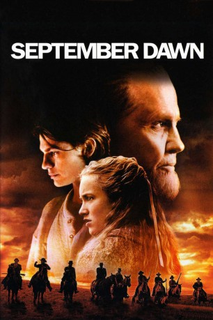

#10484 September Dawn
 
 IMDB-Wertung: 5.8 / 10
IMDB-Wertung: 5.8 / 10  Tomatometer: 15
Tomatometer: 15  Metascore: 25
Metascore: 25 
Im Jahre 1857 reist ein Zug von Siedlern durch Utah und wird von den dort ansässigen religiös-faschistoiden Mormonen, die die Einwanderer nicht dulden wollen, angegriffen. Am Rande dieses tragischen Massakers bei dem rund 140 Menschen ihr Leben lassen, kommt es zu einer Romeo & Juliet ähnlichen Liebesgeschichte zwischen der Tochter des Siedler-Pastors und einem jungen Mormonen.
Jahr: 2007
Dauer: 111 Minuten
FSK: 16
Land: USA Studio: Black Diamond PicturesTonspuren: DTS - ,
Untertitel:
Auflösung: 1080p (1920x1080) Größe: 6113 MB
Genre: Drama, Western, Liebe, Geschichte
Regisseur: Christopher Cain
Drehbuch: Christopher Cain, Carole Whang Schutter
Soundtrack: William Ross
Darsteller:
 Terence Stamp als Brigham Young
Terence Stamp als Brigham Young- Trent Ford als Jonathan Samuelson
- Krisinda Cain als Young Woman
- Shaun Johnston als Captain Fancher
 Jon Gries als John D. Lee
Jon Gries als John D. Lee Lolita Davidovich als Nancy Dunlap
Lolita Davidovich als Nancy Dunlap Jon Voight als Jacob Samuelson
Jon Voight als Jacob Samuelson Taylor Handley als Micah Samuelson
Taylor Handley als Micah Samuelson- Daniel Libman als Reverend Grant Hudson
- Tamara Hope als Emily Hudson
- Huntley Ritter als Robert Humphries
 Dean Cain als Joseph Smith
Dean Cain als Joseph Smith Dave Trimble als Dr. Willard Richards
Dave Trimble als Dr. Willard Richards- Peter Skagen als Guard #1
 Chad Nobert als Guard #2
Chad Nobert als Guard #2- Geoff Erwin als Guard #3
- Carter Burns als Little Boy
 Tom Carey als Mormon Fighter
Tom Carey als Mormon Fighter- Pete Seadon als Father
- Marnie Madden als Wagon Lady (uncredited)
- Franklin E. Levinson als Captain Baker
- Barbara Gates Wilson als Martha Hudson
- Ron Webber als Hyrum Smith
- Gary Lauder als John Taylor
- Marty Antonini als Apostle
- Tracey Woolsey als Jonathan's Mother
- Jack Alma als Young Jonathan
- Sage Woolsey als Jonathan's Sister
- Morris Birdyellowhead als Chief Kanosh
- Hal Kerbes als Major Higbee
- David Cowley als William Cameron
- Lyle W. Edge als Charles
- Patrick Richards als Settler
- Lindsay Burns als Woman
- Stacey Zurburg als Another Woman
- Gillian Carfra als Mother
- Christy Greene als Wounded Woman
- Sean Anthony Olsen als Mormon Rifleman
- Lloyd Jacobson als Driver
- Tyson Wiebe als Settler (uncredited)
Datei: X:\HD-Western-2000-2015\September Dawn (2007, FSK16, 1920x1080).mkv seit 11.01.2019
Festplatte: HD Eastern+Western
 Es gibt insgesamt 61 Filme in der Gruppe 'HD-Western-2000-2015'
Es gibt insgesamt 61 Filme in der Gruppe 'HD-Western-2000-2015'